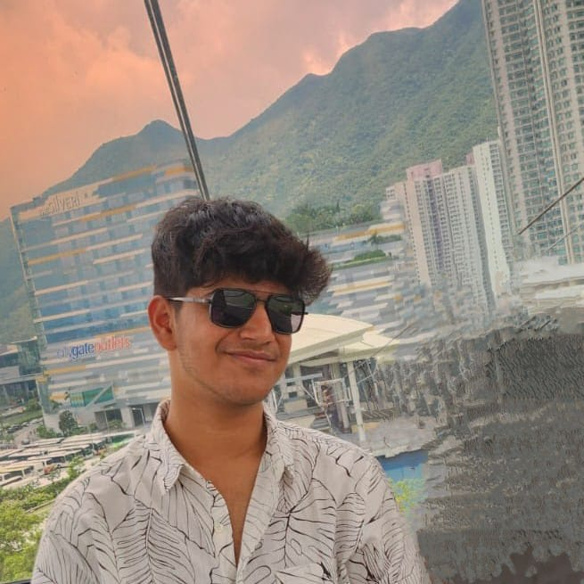

Kaviesh Agarwaal
STUDENT
CONTACT
+91 99209 50377
kaviesh.xyz
agarwaal@kaviesh.xyz
Mumbai, Maharashtra
ABOUT
Highly motivated 15 year-old recent graduate of SVKM JV Parekh International School with a passionate interest in finance and technology. A quick learner and eager to gain real-world experience, contribute to global wellness, and thrive in this rapidly evolving world.
EDUCATION
I completed my IGCSE 10th boards in March 2024, scoring 90+ percentile in 5 subjects, including English, Math, and Computers. I am currently studying in A Levels (10+2), specialising in commerce. I have completed various online courses on Udemy about web-development and python, and have also completed the ASTA Technical Analysis Course.
- Completed IGCSE (10th) in March 2024, scoring 90+ percentile in 5+ subjects, such as English, Math and Computers
- Currently studying in A levels (10+2)
- Completed ASTA Technical Analysis Course
- Completed 2 Udemy Web-Dev Courses
- Completed Udemy Python Bootcamp Course
ACCOMPLISHMENTS
I have received a Rs. 2 Lakh Scholarship from my school for outsanding results in 10th grade. I am also devoted to social work, currently being the treasurer for the Interact Club of Mumbai Jewels, an international youth-led social-work organization comprising of over a 100 members. I have ranked 2nd in NMIMS's Social Conclave Conferences of 2023 and 2024. I have also been the IT head of my school for the past 3 years.
- Received 2 Lakh scholarship for 10th Results
- Currently Treasurer of Interact Club of Mumbai Jewels, a youth-led international social-work club
- Ranked 2nd in NMIMS's Social Conclave Conferences of 2023 and 2024
- Been IT head for past 4 years of my school
- Developed my own website from scratch